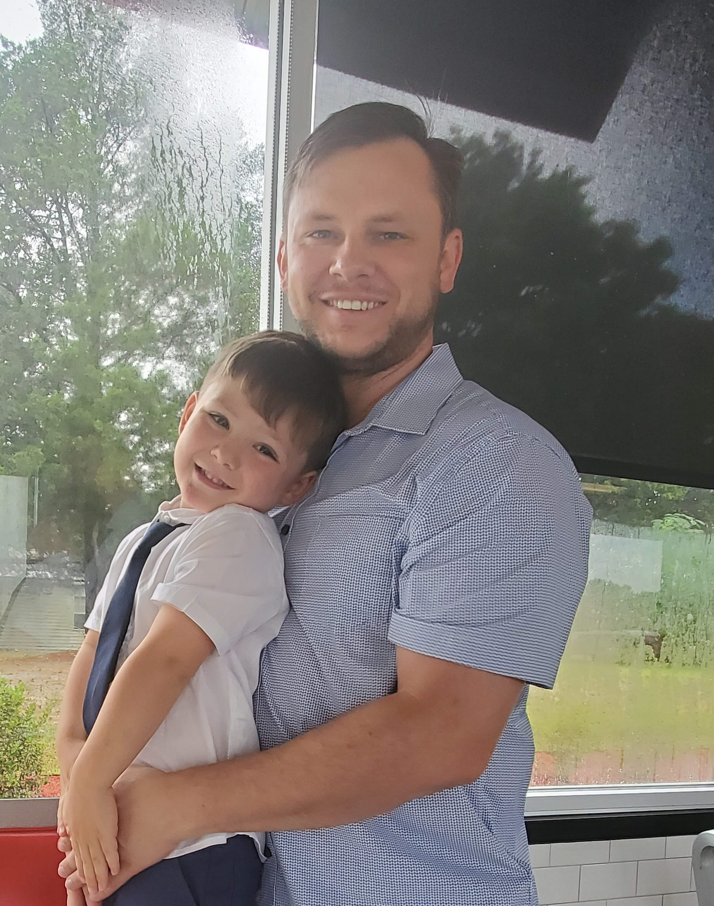

full-stack developer
With years of experience in performing and executing tasks in-line with intent, I am always goal oriented to try and deliver the best product possible for whomever the customer may be. Whether that be the end-user or another developer my desire is to be focused on outcome goals.
Learning is a lifelong journey, and I'm happy to still be on it. I'm always looking for ways to push what I know and expand my current skillset to improve how I perform. Never afraid to say, "I don't know, yet."
Being a member of a team with common goals drives me. Whether it is helping to orchestrate the teams efforts or working alongside peers, the whole is greater than the sum of its parts.
Leader and problem-solver based in NC
Software Engineering is problem solving, and it's something I love. With nearly 10 years of experience in the military at varying levels of leadership, I bring a focused and effective problem-solving ethic to everything I do. As a husband and father my perspective is very centered on people and the experiences they have in using a product or service. That people first approach helped me be successful as a leader in military operations and planning, and as a retail sales manager for one of my city's longest running businesses.
With years of experience as a teacher and someone who loves the academic process, I am always pushing myself to learn and help others around me improve. After retiring from the military I took advantage of opportunities to improve myself further through education and extended learning. While studying Engineering and Computer Science I received numerous recognitions and scholarships for my work and earned a 3.5/4 cumulative GPA and 3.9/4 within my computer courses. At the same time I was helping raise my now 4-year-old son, was Student President of academic honor societies on campus, and was selected as one of four student respresentatives to the Board of Trustees from amongst an over 12,000 member student body.
My military experience taught me a lot about being an effective member of a team. As a team member or as a team leader, effectiveness often came down to communication. With excellent communication skills, no fear of public speaking or presentation, and a deft ability to make concepts understandable I bring soft skills of great importance wherever I work.
A selection of projects I have worked on